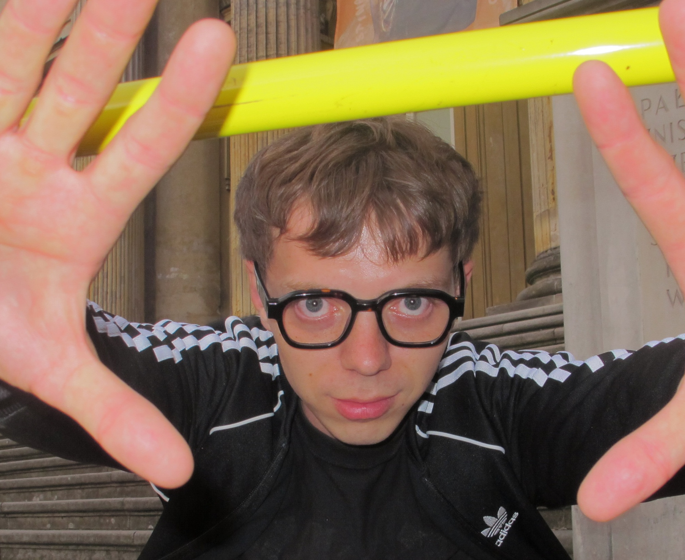

Кум
Кум
In Ukrainian, "Кум" (pronounced koom) traditionally refers to a godfather—specifically, the male sponsor at a child's baptism. It can also refer to a close male friend or in-law in a spiritual or symbolic sense, because in Eastern Slavic cultures, the relationship between godparents and the child's family is considered very special and lasting.

Max
Dima